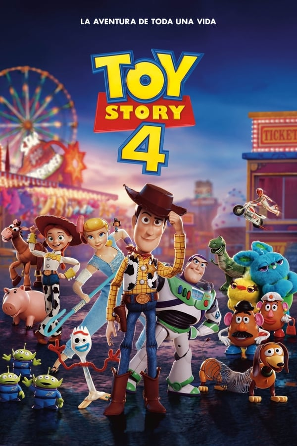

Toy Story 4
Woody siempre ha tenido claro cuál es su labor en el mundo y cuál es su prioridad: cuidar a su dueño, ya sea Andy o Bonnie. Sin embargo, Woody descubrirá lo grande que puede ser el mundo para un juguete cuando Forky se convierta en su nuevo compañero de habitación. Los juguetes se embarcarán en una aventura de la que no se olvidarán jamás.
2019
+5
1h 30m
Director: Josh Cooley
Actores (voice): Tom Hanks (woody), Tim Allen (buzz lightyear), Annie Potts (Betty), Tony Hale (Forky), Joan Cusack (Jessie), Madeleine McGraw (Bonnie)